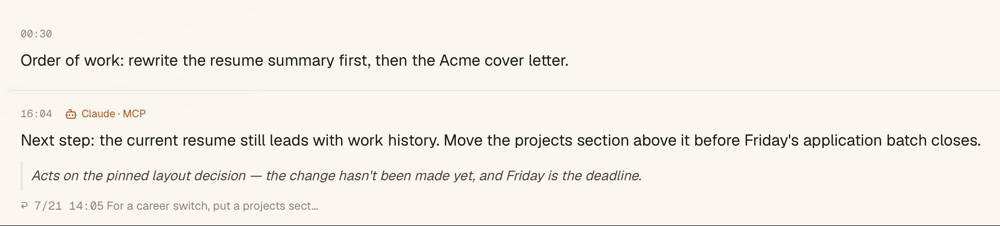
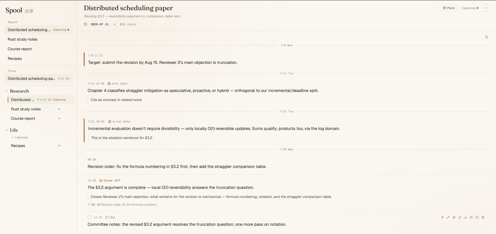
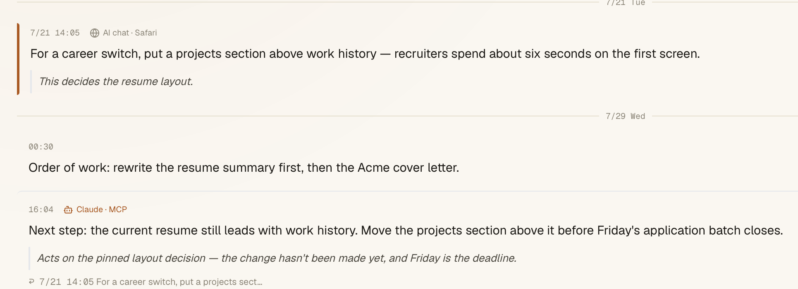

The making of Spool
A design-and-engineering account of building a local-first context hub — the decisions, the discipline, and one production incident that shaped the system.
The problem
Long-running projects shred their own context. A key argument lives in one AI conversation, a decision in an email, a reference in a browser tab closed three weeks ago. Large language models make this worse, not better: they remember nothing between conversations, so every session begins with re-explanation — and the quality of that re-explanation silently caps the quality of the answer.
Spool's bet is narrow: if capturing a fragment costs one keypress, and re-assembling a project's context costs one paste, people will actually do both.
A constitution before code
The product is governed by six non-negotiable principles, written down before implementation and used to reject features ever since:
- Capture must be zero-friction — one keypress, no decisions.
- Local-first, private by default — the app makes no network requests at all.
- A project is a log, not a chat — append-only, time-ordered, quiet.
- Retrieval is deterministic — packing and search never call AI or the network.
- AI is a librarian, not an author — anything an AI files is attributed, append-only, and can never overwrite what the user wrote by hand.
- Exactly two tiers of structure — Workspace → Project, no infinite nesting.
The most consequential of these is №5. It later became an enforced write policy, a data-hygiene audit tool, and the reason the product could remove its built-in AI entirely.
Architecture
Spool is a Tauri 2 application: a Rust core with a React/TypeScript front end, backed by a single SQLite database. The packer is implemented twice — once per language — and pinned to byte-identical output by golden tests.
- Storage — SQLite with FTS5 full-text search using a trigram tokenizer (chosen so Chinese text searches correctly), plus a LIKE fallback for short queries.
- Capture pipeline — a global double-tap ⌥ gesture (CGEventTap), a non-activating always-on-top overlay for confirmation, and automatic source detection down to the browser tab title.
- The packer — the crown feature — is a pure function from project state to Markdown. No AI, no network: the same project packs to the same bytes on the same day.
- MCP server — Spool exposes its library to AI clients over the Model Context Protocol via stdio: eighteen tools for reading, searching, filing, and auditing. Every AI write carries a source label it cannot set itself; what the user wrote by hand is read-only to machines, and anything an AI wants to change rather than append goes through a queue the user approves.

Verification discipline
Determinism is a testable promise, so the test suite is built around it:
- Cross-language golden files. The pack format is implemented twice — in TypeScript for the GUI and in Rust for the MCP server. Golden tests pin both implementations to byte-identical output, so the two surfaces can never drift apart.
- Migration lockstep. Schema migrations live in a registry with version constants asserted on both the TypeScript and Rust sides; the app snapshots the database automatically before any migration runs.
- 313 automated tests across Vitest and cargo, including digest
determinism, a read-only library audit tool (
check_library) whose report is itself byte-stable within a day, and a cross-language golden test that fails unless the TypeScript and Rust pack renderers agree byte for byte.
Beyond unit tests, each release batch went through an adversarial review loop with scored acceptance: 8.5 → 7.7 → 9.5 → 9.8 across four rounds. The dip to 7.7 was the process working — a reviewer catching a data-hygiene gap that a later round proved fixed.
The incident that shaped the system
On 2026-05-29, a development build wiped the live database: a schema-rebuild branch in the migration code met a build/database version skew, and the "rebuild" path ran against real data. The postmortem produced the guardrails that now define the data layer: automatic pre-migration snapshots, a migration registry with dual-side version constants, mandatory backups before any operation touching the live database, and an isolated-build workflow for on-device verification so development builds can never again open the production file by accident.
A data-loss incident is not a line anyone wants on a project page. It is on this one because the guards it produced are the most load-bearing engineering in the product.
Removing the AI to build a better AI product
Mid-project, Spool shipped optional built-in AI providers. They were removed — entirely. Ordinary users can't obtain API keys or run local models, and every built-in provider weakened the privacy story. The replacement is architectural: Spool is the context repository, and AI clients the user already owns operate on it through MCP. The analogy that guided the decision: Spool is the editor; the AI is a plugin. Since the pivot, the app's content-security policy structurally blocks all outbound network traffic — the privacy policy is enforced by the build, not by promises.
Where it stands
v0.4.0 is feature-complete and packaged for macOS. v0.3.0 closed the original twelve implementation phases, from the data layer through capture hardening, full-text search, project digests, cross-project references, and the MCP surface. The logo — a spool seen from above, its thread pulling free — was designed in-house, down to the tray icon's alpha-channel template rendering.
v0.4.0 is about what happens to a memory once it is being written to. A context store that an AI can append to has two failure modes that do not exist in a notebook: facts going stale with nothing marking them, and machine-written text quietly acquiring the authority of hand-written text. Both got mechanisms rather than warnings. A block can be retired — it leaves the pack, stays in the library, stays searchable, and the pack states that it was left out. A newer block can point at the one sentence an older block got wrong, with the older block printed in full and still standing on everything else. An annotation records who wrote it, so a note an AI filed renders differently from one you wrote and can never be read as your judgement. Anything an AI wants to change rather than append arrives as a proposal you approve.
The same release opens a second, narrower channel: if a supported coding CLI you already own is installed and logged in, Spool can run Follow Up against the lines you asked it to watch, write a cross-project Weekly Review, or help draft those follow-up targets. Spool still makes no network request itself and stores no key — the request leaves from that subprocess, on your own account's quota, and every run is watchable while it happens. Follow Up is the only action that receives web search tools; the others read the library without them.


A 2–3 minute demo video is being recorded for the v0.4.0 release and will be embedded here. Meanwhile, the interactive demo walks the same loop in your browser.
Spool is designed and built by Ocean (KIM-ocean-HZ). Source, roadmap, and the full product constitution are on GitHub.